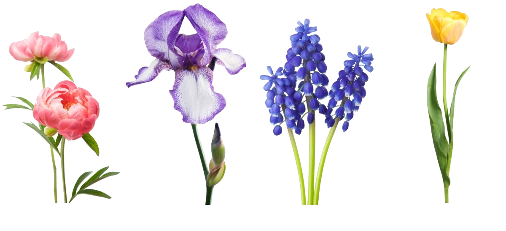

For Keeps
By: Joy Harjo
Sun makes the day new.

Tiny green plants emerge from earth.
Birds are singing the sky into place.
There is nowhere else I want to be but here.
I lean into the rhythm of your heart to see where it will take us.
We gallop into a warm, southern wind.
I link my legs to yours and we ride together,
Toward the ancient encampment of our relatives.
Where have you been? they ask.
And what has taken you so long?
That night after eating, singing, and dancing
We lay together under the stars.
We know ourselves to be part of mystery.
It is unspeakable.
It is everlasting.
It is for keeps.
Next Page